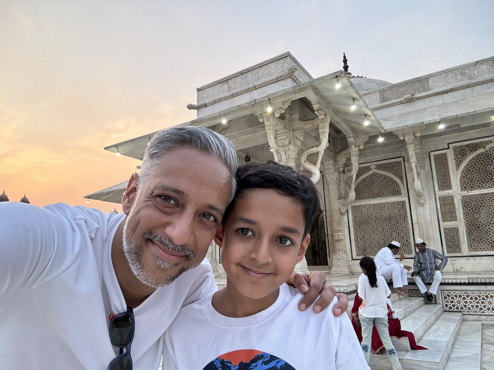

Operator.
Coach.
Father.
I have spent twenty years building things that work: teams, revenues, operating models. Somewhere along the way I learned that the most important building happens inside.

I have spent twenty years building things that work: teams, revenues, operating models. Somewhere along the way I learned that the most important building happens inside.
The story
My career began in San Francisco, in the early days of digital advertising, at companies small enough that everyone wore ten hats and large enough that the stakes were real. I joined startups before they became something, helped build teams, and watched one of those companies get acquired for $300 million. I was employee 27. That experience shaped how I think about scale: what it takes, what it costs, and what gets lost when you move too fast without the right foundations.
From San Francisco I moved to Mumbai, then to Singapore. Senior leadership roles at Times Internet, LinkedIn India, FCB Kinnect, and TikTok SEA. Each move brought a new market, a new culture, and the same fundamental challenge: getting sales and delivery to speak the same language. Getting people to pull in the same direction. Getting organisations to actually do what they say they will do.
After twenty years of that work, the advisory practice was a natural step. The coaching practice came from something different. Harder.
"The privilege of a lifetime is to become who you truly are."Joseph Campbell
The inside work
The coaching practice did not come from a course or a certification alone. It came from doing the work myself. Understanding what it means to sit with discomfort long enough to learn from it. To look honestly at patterns, in leadership, in relationships, in the stories we tell about ourselves, and choose differently.
I believe that healing yourself is how you help others heal. That the gap between who we are and who we could be is always worth closing. That real change is built from the inside out, not the outside in. These are not things I read and agreed with. They are things I lived into, slowly and imperfectly.
My son is the clearest mirror I have. Parenting has taught me more about presence, patience, and what it means to lead with love than any leadership role ever did. I bring that into the coaching room.

The most important building happens inside.
The name
In the spiritual tradition my family carries, a Mahant is not a title you give yourself. It is one you are given, by a community that has watched you earn it. Recognized leadership. Wisdom trusted, not claimed.
My family has held this name across generations, across continents, across a world that has changed almost beyond recognition. I carry it as a reminder: authority flows from service, not appointment. You earn the right to guide by doing the work first.
That is the philosophy behind both practices.
"A Mahant is not self-appointed. It is recognized leadership: wisdom earned, never claimed."
The work
Mahant Co
For companies scaling hard and losing coherence between what they sell and what they deliver. Operating model and AI readiness work, built from twenty years inside the room.
Explore Advisory →Creactive Coaching
A structured, finite journey for leaders ready to close the gap between who they are and who they are becoming. Not therapy. Not open-ended. Built to move.
Explore Coaching →Whether it is your business or your leadership, let us start with what is actually going on.
Work With Me